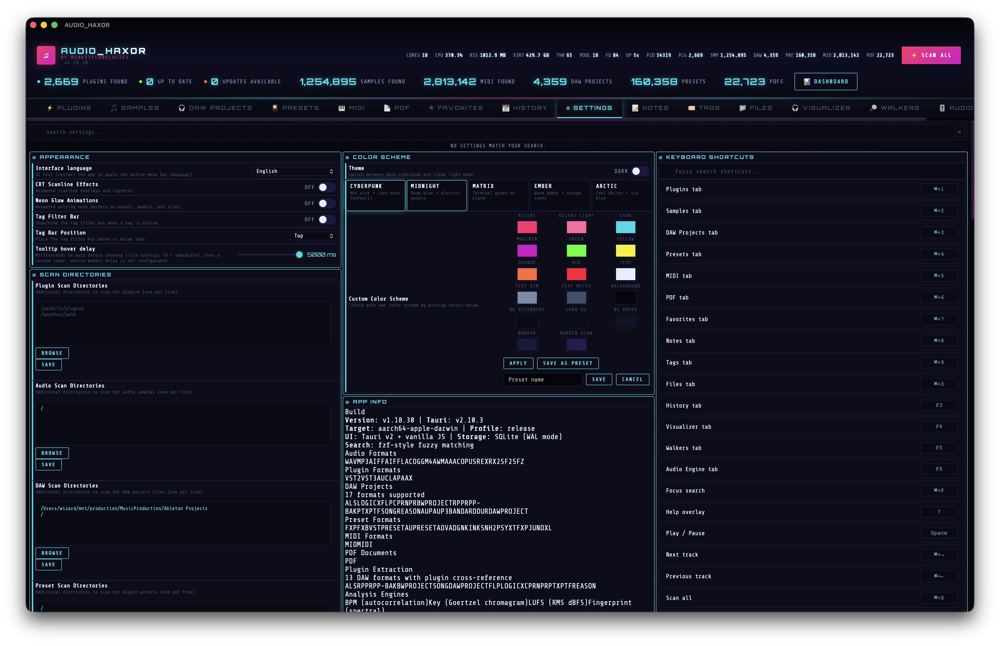
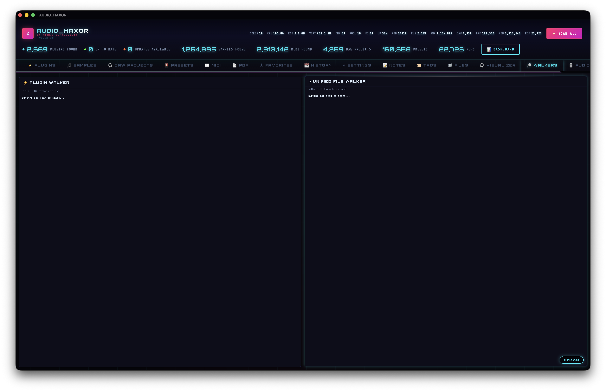
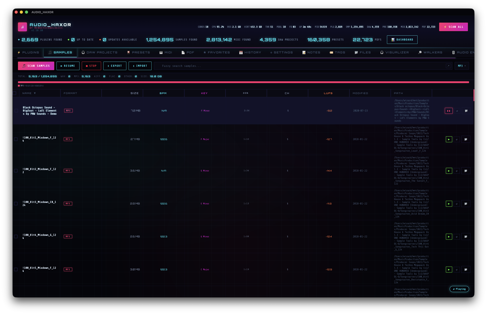
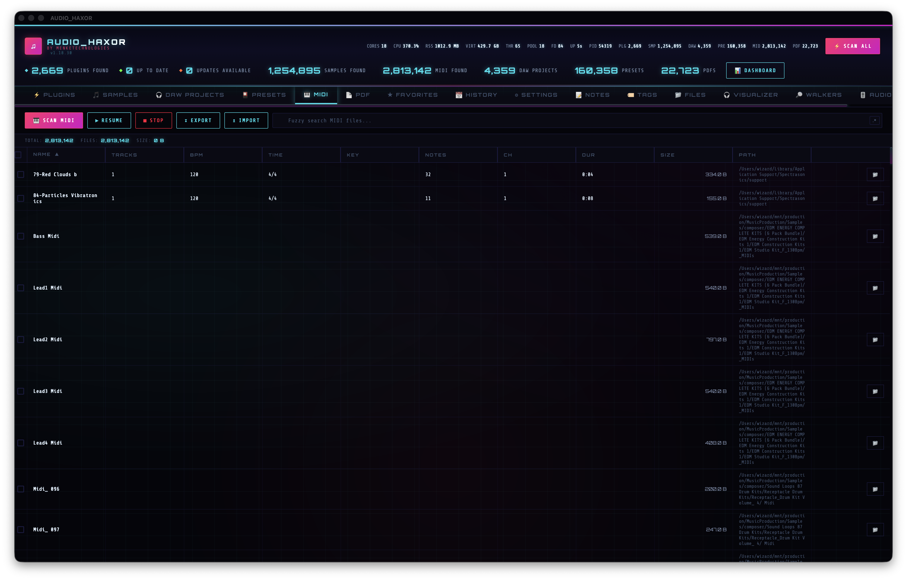
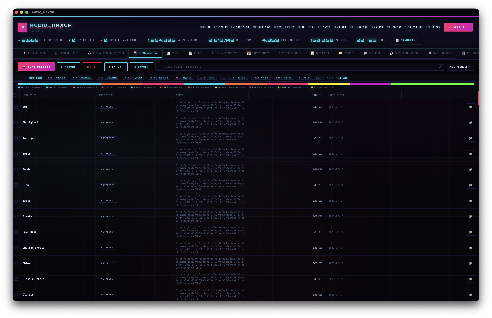
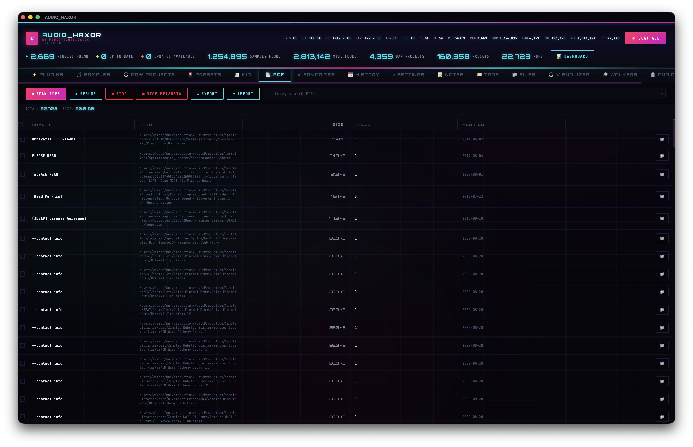
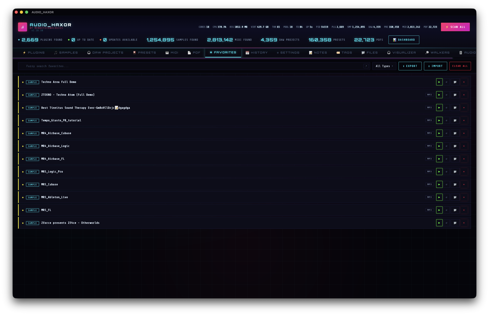
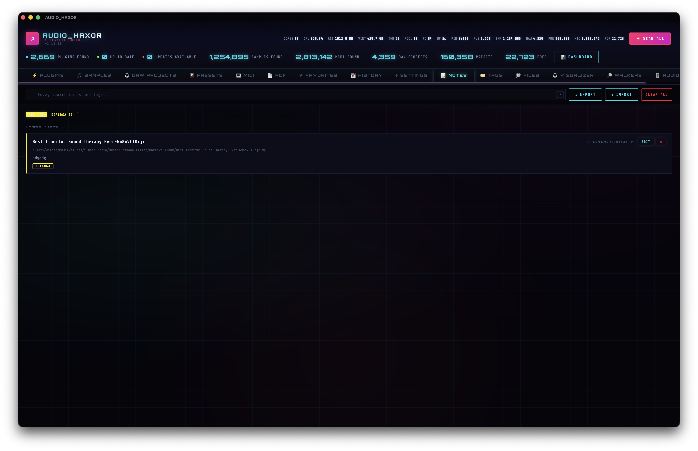
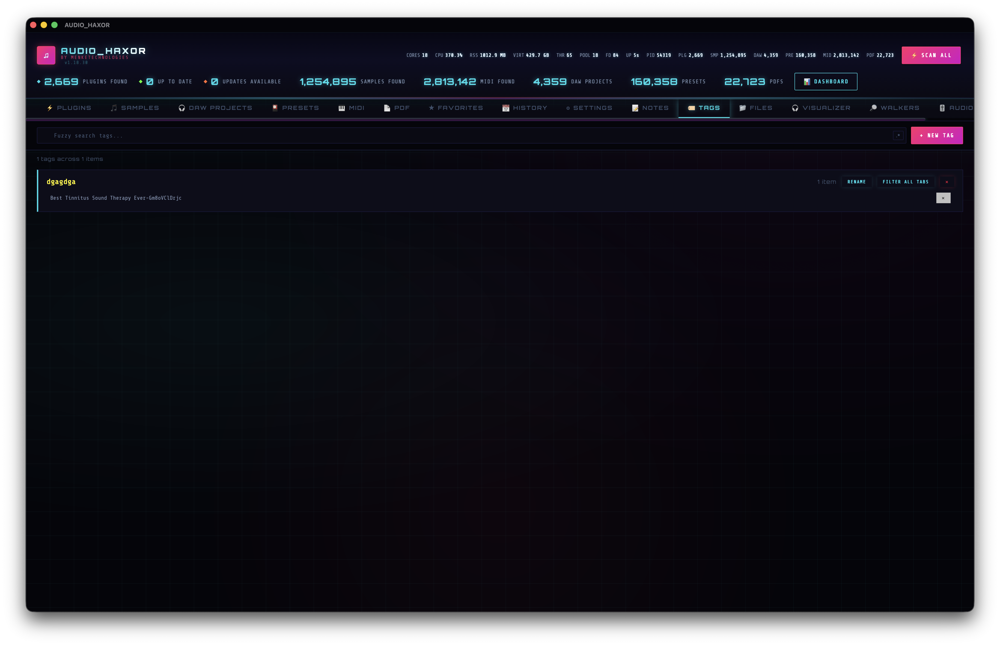
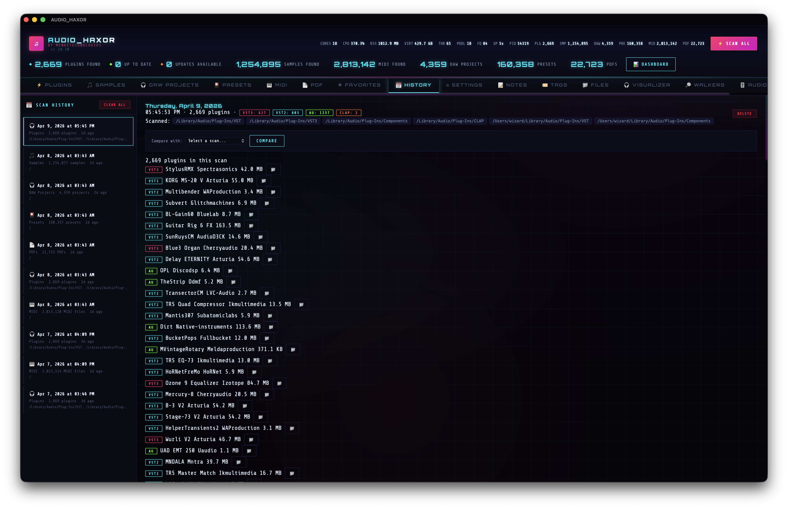

Static hub for developer documentation. The main UI is frontend/index.html; the menu-bar tray uses a separate WebView (frontend/tray-popover.html + frontend/js/tray-popover.js).
Step-by-step tutorial — how to use AUDIO_HAXOR
End-user walkthrough from first launch to daily workflows. Verify against the live UI — tab labels are in frontend/index.html, shortcut bindings in frontend/js/shortcuts.js, and scan plumbing in src-tauri/src/unified_walker.rs. Screenshots live in docs/assets/ and are named after each tab (plugins.png, samples.png, daw.png, …); drop PNGs at the paths below and they render inline.
01First launch — orient yourself
After install, open AUDIO_HAXOR. The main window shows a header bar (scan buttons, resume-all, process stats) and a row of tabs: Plugins · Samples · DAW · Presets · MIDI · PDF · Favorites · Notes · Tags · Files · History · Visualizer · Walkers · Audio Engine · Settings. The welcome panel prompts you to run your first scan.
Cmd+1…Cmd+9, Cmd+0 for Settings. Hover the tab to see the binding in the tooltip.02Configure your scan roots
Press Cmd+0 (or click Settings). In the Scan roots section, add the folders that contain your plugins, samples, DAW projects, presets, MIDI, and PDFs. Use Blacklists to skip noisy subtrees (node_modules, caches, backups). Toggles let you enable auto-scan, folder watch, incremental scan, and prune-old-scans.

settings-search.js) — type “root”, “watch”, or “lufs” to jump straight to a control.03Run your first scan (Scan All)
Back in the main header, click Scan All. That dispatches scan_unified, which walks every configured root once and fans progress into the per-type tabs. Watch the header counters and the Walkers tab for live per-root status. Hit Stop any time; if workers are paused, a Resume all button appears in the header.

scan_plugins / scan_audio_samples / scan_daw_projects / etc.04Explore the Plugins tab
Open Plugins (Cmd+1). The SQLite-backed table lists VST / VST3 / AU / CLAP hits with vendor, format, path, and KVR metadata. Click a column to sort (persisted via sort-persist.js), drag headers to reorder (columns.js), and use the filter bar above the table. Right-click a row for context actions: reveal, copy path, open folder, favorite, notes, KVR update check.

xref.rs).05Preview audio samples
Switch to Samples (Cmd+2). Click any row to load it into the floating player; the waveform and spectrogram render from the decode worker (audio-decode-worker.js). Scrub the waveform, toggle loop / A-B loop, and use the Find similar row action to pull acoustically-related files through the chromaprint fingerprint cache.

duplicates.js + content_hash.rs).06Batch analyze BPM / key / LUFS
In Samples, open the analysis menu and run Batch analyze. The backend fills in bpm, key, and lufs columns (bpm.rs, key_detect.rs, lufs.rs). Progress streams into the table — sort by any of these columns once values appear. You can also trigger single-file analysis from the context menu.
smart-playlists.js) — e.g. “LUFS > -14 AND BPM BETWEEN 120 AND 128”.07Work with DAW projects
DAW tab (Cmd+3) lists Ableton (.als), Bitwig (.bwproject), and other supported project files. Select a row and click Extract plugins to parse the project and cache its plugin list via extract_project_plugins. Use Open project to launch it in its native DAW, or Reveal to jump to it in Finder/Explorer.

08MIDI, Presets, and PDFs
MIDI shows note count, tempo, and key per file; Presets aggregates your plugin preset files; PDF indexes documentation with optional metadata extraction (PDF metadata batch in Settings). All three tabs support history, diff, and export/import.



09Command palette (Cmd+K)
Press Cmd+K anywhere to open the palette (command-palette.js). Type ≥ 2 characters to fuzzy-search across tabs, scans, transport, and settings toggles. With a query, it also runs db_query_palette_preview and returns matching plugins, samples, projects, presets, MIDI, and PDFs — choose a hit and you land on the right tab with its search field seeded.
10Floating player & transport
The floating player (audio.js) shows the current track, waveform, and history list. Controls: play/pause, seek, shuffle, loop modes, A/B loop, 3-band EQ, gain, pan, mono, speed, reverse. Favorite or tag the currently playing track with one click. Use Next/Previous to walk history, or flip Autoplay next in Settings to follow the visible Samples table instead.

11Menu-bar tray popover
Click the AUDIO_HAXOR icon in your OS menu bar (macOS) or system tray (Windows/Linux) to open a compact HUD with now-playing info, a scrubber, prev/next/play/pause, and quick actions. Theme and color scheme follow the main window automatically via update_tray_now_playing.

12Favorites, notes, and tags
Any row (plugin, sample, project, preset, MIDI, PDF) can be favorited (Cmd+5 tab), annotated in Notes (Cmd+6), or tagged from the global Tags manager (Cmd+7). The multi-filter tag bar can sit above or below tables — position is a Settings toggle (multi-filter.js).



13Files browser
The Files tab (Cmd+8) is a direct filesystem view — list, rename, delete, reveal, and open-with / default app. It uses fs_list_dir, rename_file, delete_file, and open_with_app / open_file_default under the hood. Native OS drag-and-drop works in and out (native-file-drag.js), so you can drag a row into a DAW or into another app.

14Scan history and diffs
Open History (Cmd+9) to see every scan run — unified and per-type. Select two runs and click Diff to see added/removed/changed rows between them. Prune old entries from here to keep the DB tidy, or clear a whole inventory’s history at once.

15Real-time visualizer
The Visualizer tab renders spectrum and waveform views driven from live playback or the audio engine’s optional spectrum bins (visualizer.js). Start playback from Samples (or any preview), switch to Visualizer, and watch the bins react. The view respects the UI idle backoff (ui-idle.js) so it pauses cleanly when the window is hidden.

16Audio Engine tab
The Audio Engine tab is a developer-oriented surface over the subprocess engine (audio-engine.js ↔ audio_engine_invoke). From here you can load a file, scrub/loop/reverse, apply DSP/EQ/mono, insert a VST3 or AU plugin chain, and open plugin editor windows. Use the Restart engine control if the helper misbehaves; audio_engine_restart rebuilds the child process without touching the main window.

audiocomponentd refuses XPC view delivery to unsigned hosts. A Developer ID build resolves this.17Theme, CRT, neon, color schemes
In the header (or Settings), toggle Theme (light/dark), CRT scanline overlay, and Neon border pulse. The Color scheme grid picks an accent palette; you can save custom presets too. All of these also apply to the tray popover in real time.
18Keyboard shortcuts & help overlay
Press ? (help overlay, help-overlay.js) at any time for a cheat sheet of every binding. To rebind, open Settings → Shortcuts: every action in SHORTCUT_LABEL_KEYS is listed and capturable. Custom bindings persist across launches.
Application feature map
Checklist-style index of shipped surfaces (verify in frontend/ + src-tauri/). Deeper behavior lives in README.md and rustdoc.
Main tabs
- Plugins — VST/VST3/AU/CLAP scan, SQLite table, KVR resolve + update check with queued “next update” flow (
js/kvr.js), export/import (JSON/CSV/TOML), per-scan history + diff, optional disk-usage strip (js/disk-usage.js), plugin dependency graph (js/dep-graph.js). - Samples — audio library scan + history/diff, paginated table with sort/persisted columns (
js/sort-persist.js,js/columns.js), inline preview / floating player (js/audio.js), waveform/spectrogram caches + decode worker, BPM/key/LUFS fields and batch analysis, chromaprint fingerprint cache + find similar + content duplicates, smart playlists (js/smart-playlists.js). - DAW — project scan (multiple DAW formats), open folder/project, extract plugins from project, xref/index build and cached plugin lists per project (
js/daw.js,js/xref.js), Ableton ALS/XML and generic project file reads, Bitwig.bwprojectviaread_bwproject, history/diff, disk usage. - Presets — preset scan, history/diff, export/import, disk usage.
- MIDI — MIDI scan + SQLite (
db_query_midi), history/diff, note/tempo/key metadata (js/midi.js), export full tab or selection subset (js/export.js). - PDFs — PDF scan, optional metadata extraction batch + progress events, open in viewer / default app, export DSV/JSON, import JSON, history/diff (
js/pdf.js). - Favorites — starred paths across types (
js/favorites.js), export/import. - Notes — per-item notes (
js/notes.js), export/import, clear. - Tags — global tag manager + filter bar (position top/bottom;
js/multi-filter.js). - Files — directory browser: list, rename, delete, reveal, open-with / default app (
open_with_app,open_file_default), native drag/drop (js/file-browser.js,js/native-file-drag.js). - History — unified scan run + per-inventory scan records, compare/diff, prune/delete entries (
js/history.js). - Visualizer — spectrum/waveform views driven from playback / engine (
js/visualizer.js). - Walkers — live unified-walker status (
js/walker-status.js,get_walker_status). - Audio Engine — subprocess JSON API: file decode, transport, seek, loop/speed/reverse, DSP/EQ/mono, optional spectrum bins, VST3/AU insert chain + editor windows (
js/audio-engine.js+ IPCaudio_engine_invoke). - Settings — file-backed prefs + SQLite app strings; UI locale; light/dark + CRT + neon; color schemes / custom presets; scan roots & blacklists; auto-scan, folder watch, incremental scan, prune-old-scans, include-backups; autoplay & playback toggles; auto-update; PDF metadata auto-extract; analysis auto-run; table page size; log verbosity; cache table rebuild/clear (incl. xref/fingerprint); BPM/LUFS jobs; data-dir file list; export settings/log as PDF; shortcut editor (
js/settings.js,js/settings-search.js,js/i18n-ui.js).
Scanning & database
- Unified scan —
scan_unifiedwalks configured roots once and fans progress into the same per-type events as standalone scans (prepare_unified_scan,stop_unified_scan,get_unified_scan_run). - Standalone scans — plugins, samples, DAW, presets, MIDI, PDF each support custom roots, exclude paths, stop/resume where applicable, progress listeners, and a header resume all when workers are paused.
- SQLite — library tables for inventory + analysis fields; filter stats helpers; palette preview query; audio-library path list for fingerprints.
- Import/export — tab-scoped JSON/DSV/CSV/TOML where implemented; plugin xref export; smart-playlist export; favorites/notes; PDFs; MIDI export.
Playback & tray (summary)
- Floating player: history list, filter field, shuffle, loop modes, A/B loop, 3-band EQ + gain + pan, mono, volume, playback speed + reverse, favorite/tag current track, export/import/clear recently played, expand/collapse, hide/show pill — see
js/audio.js. - Autoplay next source — Settings chooses whether EOF / failure-chain advance follows player history or visible Samples table; tray/menu/shortcuts/palette use
respectAutoplaySource; floating Next/Previous buttons use history order only (see tray section below).
Tooling & discovery
- Heatmap dashboard — sample metadata visualization (
js/heatmap-dashboard.js). - Duplicate finder — content-level reports (
js/duplicates.js). - Process stats — main and audio-engine RSS/CPU/thread probes in header/settings.
- Logging — in-app log, clear, open log file, optional PDF export.
UX & desktop integration
- Help overlay — shortcut reference (
js/help-overlay.js). - Context menus — row actions across tabs (
js/context-menu.js). - Tooltips — hover titles for dense controls (
js/tooltip-hover.js). - Keyboard — navigable tables (
js/keyboard-nav.js), batch selection (js/batch-select.js), drag-reorder for sections/tabs (js/drag-reorder.js). - Modals — draggable custom dialogs where enabled (
js/modal-drag.js). - UI idle —
js/ui-idle.jssetshtml.ui-idle-heavy-cpuwhen the window is backgrounded/minimized/hidden to pause scanlines and suppress toasts. - Native menus — macOS/Windows menu bar mirrors many actions; GitHub / Docs items open external links.
Rust API (rustdoc)
Generated HTML for the library crate:
- Browse
app_libdocs (afterpnpm run doc:sync) - Local cargo output:
src-tauri/target/doc/app_lib/index.html
pnpm run doc:open # build + open in browser pnpm run doc:sync # copy tree into docs/api/
Main window IPC & i18n
frontend/js/ipc.js is the Tauri bridge (replaces an Electron-style preload):
window.vstUpdater: wrapsinvokefor DB queries, prefs, scans, PDF/MIDI helpers,audio_engine_invoke(subprocess audio engine JSON API — UI infrontend/js/audio-engine.js+frontend/js/audio.js), and palette search (db_query_palette_preview).- Strings: startup
get_app_stringsfillswindow.__appStr;appFmt/toastFmtfor UI and toasts.reloadAppStrings(locale)reloads maps, reapplies i18n, invalidates the command palette static cache, refreshes the native menu (refresh_native_menu), and re-syncs tray now playing. menu-actionevents: native menu bar and tray dispatch action IDs into the main window. Tray seek uses a single payload formseek:<fraction>(0..1) →seekPlaybackToPercentwithout a separate IPC command.- Host EOF poll:
listen('audio-engine-playback-eof', …)forwards tohandleEnginePlaybackEofFromPollwhen Rust detects end-of-file while WebView timers may be throttled — same advance behavior as the in-window playback path.
Command palette (Cmd+K)
frontend/js/command-palette.js — quick launcher bound by default to Cmd+K / Ctrl+K via shortcuts.js (commandPalette).
- Static rows: jump to tabs, start/stop scans, exports/imports, transport, EQ/mono, theme/CRT, and many settings toggles. Labels use
appFmt; shortcut hints use livegetShortcuts+formatKey. - Database search: with query length ≥ 2, calls
dbQueryPalettePreview(one pooled Rust task, six capped inventory queries). Results cover plugins, audio samples, DAW projects, presets, PDFs, and MIDI files. Choosing a hit switches to the right tab and seeds that tab’s search field — the palette does not rely on in-memory paginated tables alone. - Transport alignment: palette Next track / Previous track call
nextTrack({ respectAutoplaySource: true })/prevTrack({ respectAutoplaySource: true }), same as the tray, menu bar, and keyboard shortcuts (see below).
Keyboard shortcuts
frontend/js/shortcuts.js — persisted overrides and executeShortcut(id) dispatch.
- Rebinding: Settings UI lists every action in
SHORTCUT_LABEL_KEYS; custom bindings are persisted (see that module for storage and capture UI). - Scope: tab switching (plugins through audio engine), focus search, help overlay, playback (play/pause, loop, mute, volume, shuffle, A/B loop, player visibility), file ops (reveal, copy path, favorite, notes), selection, export/import current tab, dependency graph, duplicates/similar, theme, prefs, scan/stop variants, PDF metadata, fingerprint cache, BPM/key/LUFS jobs, cache clears, log verbosity, table page size, autoplay source, tag filter bar, and more.
- Next / Previous track keys invoke
nextTrack/prevTrackwithrespectAutoplaySource: trueso ordering followsautoplayNextSource(player history vs Samples table), not only the floating history list.
Tray popover & playback IPC
High level (details in source comments):
- State: Main window calls
update_tray_now_playing(Tauri v2:invoke(..., { payload: { … } })) fromsyncTrayNowPlayingFromPlaybackinfrontend/js/audio.js. Payload includesui_theme, optionalappearance(CSS variables fromSCHEME_VAR_KEYS), and now-playing fields. - Theme & color schemes: Popover applies
data-themeand inline scheme vars so the HUD tracks Settings light/dark and color presets. - Previous / Next: Snake-case menu IDs
prev_track/next_track(tray popover, native menu bar,tray_prev/tray_next) callprevTrack/nextTrackwithrespectAutoplaySource: trueso the list followsautoplayNextSource(player history vs visible Samples table). Floating player buttons use camelCase actions and stay on the history list only. - Autoplay next (on/off): Gates end-of-track and failed-preview auto-advance (
tryPreviewAutoplayNextOnFailureAsyncinpreviewAudio) along the same list as EOF (autoplayNextSource), after an error toast; can chain across multiple bad files. Does not gate manual prev/next from tray/menu/shortcuts. - Tray mirror: The popover has no separate queue — it reflects the main window via
syncTrayNowPlayingFromPlaybackafter the current path updates. - Tray seek: Popover scrubber sends
menu-actionwith payloadseek:<fraction>; see IPC section above. - HUD subtitle:
syncTrayNowPlayingFromPlaybackclears a redundant subtitle when#npMetaLinewould duplicate the track title (e.g. basename-only path matching the displayed name).
Monorepo layout
High-level tree (names only — open the repo for full detail).
audio-haxor/ ├── docs/ # This hub + synced rustdoc (docs/api/) + hud-static.css, hud-theme.js ├── frontend/ # Main WebView: index.html, js/*.js, tray-popover.html ├── i18n/ # app_i18n_*.json string catalogs ├── reports/ # Generated artifacts (e.g. i18n audit HTML) ├── scripts/ # pnpm wrappers, Python i18n tools, JS test runners, shell maintenance ├── src-tauri/ # Rust crate (lib + binary), capabilities, bundled resources │ └── src/ # lib.rs invoke surface + domain modules (see below) └── package.json # pnpm scripts; version mirrors tauri.conf / Cargo for releases
Package scripts (pnpm)
Entry points from package.json — run from repo root with pnpm ….
dev / tauri:dev → tauri dev build / tauri:build → tauri build (+ postbundle audio-engine helper on full build) tauri:build:ci → CI build without signing test → scripts/test.sh (combined) test:js → node scripts/run-js-tests.mjs test:rust → cargo test --manifest-path src-tauri/Cargo.toml test:audio-engine → node scripts/run-audio-engine-tests.mjs doc / doc:open / doc:sync → rustdoc; doc:sync copies target/doc → docs/api/ clean / bust / rebuild / nuke / deploy → maintenance shell scripts db:vacuum / db:stats → SQLite maintenance helpers i18n:sort / i18n:sort:check / i18n:audit → catalog sort + HTML audit report
Shell helpers under scripts/
Thin wrappers around builds, tests, deploy, and DB housekeeping — read each file for flags and safety rails.
- build.sh / rebuild.sh / clean.sh / nuke.sh / bust.sh — lifecycle and cache busting.
- test.sh / ship-check.sh — pre-ship validation.
- postbundle-audio-engine-helper.sh — runs after
pnpm buildto place the audio-engine helper next to the app bundle. - bundle_dmg.sh / deploy.sh / cyberpunk.sh — packaging and themed extras.
- db-vacuum.sh / db-stats.sh — on-disk SQLite maintenance.
Tauri invoke inventory
Authoritative list lives in src-tauri/src/lib.rs inside tauri::generate_handler![…]. Grouped here for orientation (names only).
Core / system get_version, get_walker_status, get_home_dir, get_process_stats open_update_url, open_prefs_file, get_prefs_path, open_file_default, open_with_app fs_list_dir, delete_file, rename_file, read_text_file, write_text_file Plugin scan + KVR + plugin history scan_plugins, stop_scan, check_updates, stop_updates, resolve_kvr history_get_scans, history_get_detail, history_delete, history_clear, history_diff, history_latest kvr_cache_get, kvr_cache_update open_plugin_folder, export_plugins_json, export_plugins_csv, import_plugins_json Audio samples + analysis + fingerprints scan_audio_samples, stop_audio_scan, get_audio_metadata audio_history_save, audio_history_get_scans, audio_history_get_detail, audio_history_delete audio_history_clear, audio_history_latest, audio_history_diff estimate_bpm, detect_audio_key, measure_lufs, batch_analyze compute_fingerprint, find_similar_samples, build_fingerprint_cache, find_content_duplicates open_audio_folder, export_audio_json, export_audio_dsv, import_audio_json DAW projects scan_daw_projects, stop_daw_scan, daw_history_*, open_daw_folder, open_daw_project extract_project_plugins, read_als_xml, read_bwproject, read_project_file export_daw_json, export_daw_dsv, import_daw_json Presets / MIDI / PDFs scan_presets, stop_preset_scan, preset_history_*, open_preset_folder scan_midi_files, stop_midi_scan, midi_history_*, db_query_midi, db_midi_filter_stats, get_midi_info scan_pdfs, stop_pdf_scan, pdf_history_*, open_pdf_file, pdf_metadata_get pdf_metadata_extract_abort, pdf_metadata_extract_batch, pdf_metadata_unindexed export/import helpers for presets, PDFs, TOML, etc. (see handler list) Unified walker + caches + logs + data files scan_unified, get_unified_scan_run, prepare_unified_scan, stop_unified_scan read_cache_file, write_cache_file, list_data_files, delete_data_file append_log, read_log, clear_log Audio engine subprocess audio_engine_invoke, audio_engine_restart audio_engine_eof_watchdog_start, audio_engine_eof_watchdog_stop get_audio_engine_process_stats Preferences + i18n + native chrome prefs_get_all, prefs_set, prefs_remove, prefs_save_all get_app_strings, get_toast_strings, refresh_native_menu tray_menu::update_tray_now_playing, tray_menu::tray_popover_action tray_menu::tray_popover_resize, tray_menu::tray_popover_get_state tray_menu::tray_popover_get_ui_theme SQLite (queries, stats, maintenance, analysis backfill) db_query_audio, db_query_plugins, db_query_daw, db_query_presets, db_query_pdfs db_query_midi, db_query_palette_preview db_audio_stats, db_daw_stats, db_preset_stats, db_pdf_stats, db_plugin_filter_stats db_audio_filter_stats, db_daw_filter_stats, db_preset_filter_stats, db_pdf_filter_stats db_midi_filter_stats, get_active_scan_inventory_counts, db_list_scans db_update_bpm, db_update_key, db_update_lufs, db_update_analysis, db_backfill_audio_meta db_get_analysis, db_unanalyzed_paths, db_audio_library_paths, db_migrate_json db_cache_stats, db_clear_caches, db_clear_cache_table Folder watch start_file_watcher, stop_file_watcher, get_file_watcher_status
Rust modules (src-tauri/src)
One file per concern where possible; heavy lifting is split so IPC handlers stay thin.
- lib.rs / main.rs — Tauri builder,
generate_handler, window restore, plugin registration. - db.rs — SQLite with WAL; dedicated writer mutex vs round-robin read pool (see module docs — avoids starving UI queries during migrations/writes).
- history.rs — scan snapshots, preferences merge, typed history structs per domain.
- scanner.rs — plugin inventory; audio_scanner.rs, daw_scanner.rs, preset_scanner.rs, midi_scanner.rs, pdf_scanner.rs — parallel domain walkers.
- unified_walker.rs — single filesystem pass feeding the same progress channels as standalone scans.
- audio_engine.rs — subprocess lifecycle + JSON RPC bridge for decode, transport, DSP, optional plugins.
- bpm.rs / key_detect.rs / lufs.rs — analysis primitives; similarity.rs, content_hash.rs — chromaprint / duplicate detection helpers.
- kvr.rs — KVR resolve + update queue integration.
- xref.rs — DAW project cross-reference and cached plugin lists per project.
- file_watcher.rs — notify-based rescans from configured roots.
- midi.rs, pdf_meta.rs — format-specific metadata extraction.
- path_norm.rs, scanner_skip_dirs.rs, audio_extensions.rs, bulk_stat.rs — path rules, skipping, and IO batching.
- open_with_app.rs — platform “open with” / reveal patterns.
- app_i18n.rs — loads catalogs for
get_app_strings; native_menu.rs, tray_menu.rs — menu bar + tray popover wiring.
SQLite & performance notes
The database layer is documented in-source: WAL mode, a single writer connection for migrations and serialized writes, and a pool of read-only handles rotated for db_query_* so one long query does not block the whole UI.
- Filter stats — capped aggregation helpers back tab headers and multi-filter UX without loading entire tables into the WebView.
- Analysis columns — BPM, musical key, LUFS, and batch backfill commands keep the library table the source of truth for sort/filter.
- Caches —
db_cache_stats/db_clear_cache_tableexpose maintenance for derived tables (fingerprints, xref, etc.) without nuking raw library rows.
Audio engine subprocess
The UI talks to a separate audio-engine binary via audio_engine_invoke (see frontend/js/audio-engine.js). Rust forwards JSON messages, restarts the child when needed, and exposes EOF watchdog hooks so backgrounded WebViews still advance transport when macOS throttles timers.
- Playback — file load, seek, speed, reverse, loop modes, gain/pan/mono, multi-band EQ.
- Optional analysis path — spectrum bins for the visualizer when enabled.
- Plugin hosting — VST3/AU insert chain with editor windows where supported.
- Tests —
pnpm run test:audio-engineexercises the JSON surface from Node without the full Tauri shell.
Frontend js/ module index
Every module below is plain browser JS loaded by frontend/index.html (order matters for globals — release builds may differ from dev bundling assumptions; cross-file calls are guarded where noted in source).
Shell & IPC
- app.js — boot, tab wiring, global listeners.
- ipc.js —
window.vstUpdater, string hydration, menu-action routing. - utils.js — shared helpers (formatting, DOM, async guards).
Tabs & data
- plugins.js, daw.js, presets.js, midi.js, pdf.js — table UX per inventory type.
- history.js, walker-status.js — scan runs and live walker HUD.
- xref.js, dep-graph.js, disk-usage.js — DAW xref, dependency graph, disk strip.
- smart-playlists.js, duplicates.js, heatmap-dashboard.js — library intelligence views.
- file-browser.js, native-file-drag.js — Files tab and native drag metadata.
Playback & engine
- audio.js — floating player, history, tray sync, autoplay chains.
- audio-engine.js — JSON client for the subprocess engine.
- audio-decode-worker.js — off-main-thread decode for waveforms/spectrograms.
- visualizer.js — spectrum/waveform presentation.
Settings, i18n, palette
- settings.js, settings-search.js — prefs UI and fuzzy search over settings keys.
- i18n-ui.js — reapplies translated strings and locale toggles.
- command-palette.js — Cmd/Ctrl+K launcher + DB preview queries.
- shortcuts.js — keymap persistence +
executeShortcut. - kvr.js — KVR resolve/update UX.
Desktop polish
- context-menu.js, tooltip-hover.js, help-overlay.js, modal-drag.js.
- keyboard-nav.js, batch-select.js, drag-reorder.js, sort-persist.js, columns.js.
- multi-filter.js, favorites.js, notes.js, export.js.
- ui-idle.js — backs off animations when the window is not visible.
- tray-popover.js — separate WebView HUD (loaded from
tray-popover.html).
Static docs styling
This page shares hud-static.css with the generated i18n audit report so file:// and tauri:// views stay visually aligned. hud-theme.js wires theme toggle, CRT overlay, neon pulse, and the same color-scheme grid as the app HUD.
- i18n audit —
pnpm run i18n:auditwritesreports/i18n_catalog_audit.htmlby default (override with-o). Open that file after generation; it inlines CSS fromhud-static.cssfor a self-contained artifact. - Catalog maintenance —
pnpm run i18n:sortnormalizes key ordering;i18n:sort:checkfails CI-style when catalogs drift.
Repository
- GitHub — Audio-Haxor
- Full prose docs:
README.mdat repo root (features, testing, architecture).
Tests (quick ref)
Counts change with every commit; run locally for current totals.
- Rust:
cargo test --manifest-path src-tauri/Cargo.toml - JavaScript:
pnpm run test:js— pure helpers and micro-tests; not DOM/Tauri/E2E (see README) - Combined:
pnpm test